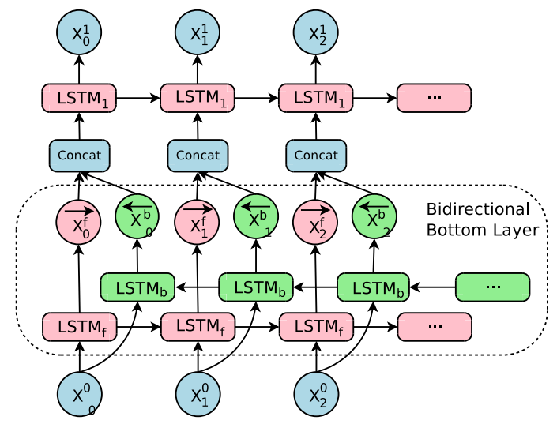
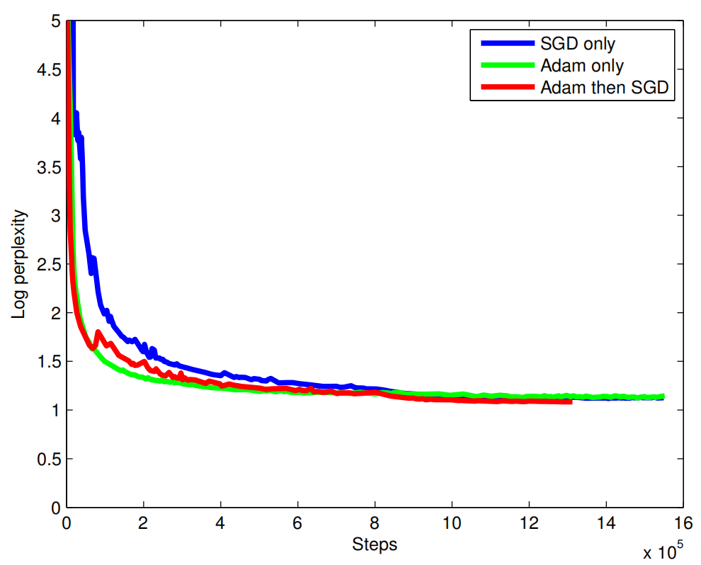

GNMT: Google's NMT
GNMT stands for “Google’s Neural Machine Translation” which is a deep machine translation model proposed in 2016 by Google Research and published in this paper: Google’s Neural Machine Translation System: Bridging the Gap between Human and Machine Translation. The official code for this paper can be found in the TensorFlow’s official GitHub repository: TensorFlow/GNMT.
GNMT is a deep LSTM network with 8 encoder (1 bi-directional layer and 7 uni-directional layers) and 8 decoder layers (all uni-directional layers) with residual connections throughout the architecture as well as attention connections from the decoder network to the encoder. To improve parallelism and therefore decrease training time, the model was partitioned on 8 different GPUs; one for each layer.
Note:
In case you didn’t pay attention, the first layer of the encoder module is bi-directional to allow the best possible coverage of the source context. The output from the forward path ${\overrightarrow{\mathbb{x}}}_t^{f}$ is concatenated with the output from the backward path ${\overleftarrow{\mathbb{x}}}_t^{b}$ and then fed to the next layer of the encoder:
This model follows the common sequence-to-sequence learning framework. It has three components: an encoder network, a decoder network, and an attention network. Next, let’s see how it works. Let $\left( X,\ Y \right)$ be a source and target sentence pair where $X = \left\{ x_{1},\ …x_{m} \right\}$ is a set of $M$ tokens and $Y = \left\{ y_{1},\ …y_{n} \right\}$ is a set of $N$ tokens. The encoder transforms the source sentence $X$ into a list of fixed sized vectors:
\[\mathbb{x}_{1},\ ...\mathbb{x}_{m} = \text{EncoderRNN}\left( x_{1},\ ...x_{m} \right)\]Given this list of vectors $\left\{ \mathbb{x}_1,\ …\mathbb{x}_m \right\}$, along with the start-of-sentence symbol $y_{0} = \left\langle /s \right\rangle$, the decoder generates the translation autoregressively (one token at a time), until the special end-of-sentence symbol $\left\langle /s \right\rangle$ is produced:
\[y_{i} = \text{DecoderRNN}\left( \left\{ y_{0},\ ...y_{i - 1} \right\},\left\{ \mathbb{x}_{1},\ ...\mathbb{x}_{m} \right\} \right)\]The encoder and decoder are connected through an attention module which is a feed-forward network that allows the decoder to focus on different regions of the source sentence during the course of decoding. Let $y_{i - 1}$ be the decoder’s output from the past decoding time step, the attention context $a_{i}$ for the current time step is computed according to the following formulas:
\[s_{t} = \text{Attention}\left( y_{i - 1},\ \mathbb{x}_{1},\ ...\mathbb{x}_{m} \right)\] \[p_{t} = \text{Softmax}\left( s_{t} \right) = \frac{\exp\left( s_{t} \right)}{\sum_{t = 1}^{M}{\exp\left( s_{t} \right)}}\] \[a_{i} = \sum_{t = 1}^{M}{p_{t}.}\mathbb{x}_{t}\]Deep stacked networks often give better accuracy over shallower models, but deep networks suffer from gradient vanishing; which means that gradients get very small which makes training very slow or impossible at sometimes. To overcome this issue, they used residual connections between layers in the encoder and the decoder.
More concretely, let $\text{LSTM}_{i}$ and $\text{LSTM}_{i + 1}$ be the $i^{\text{th}}$ and $\left( i + 1 \right)^{\text{th}}$ LSTM layers in a stack, whose parameters are $W^{i}$ and $W^{i + 1}$ respectively. At the $t^{\text{th}}$ time step, the stacked LSTM residual connection will be:
\[c_{t}^{i},m_{t}^{i} = \text{LSTM}_{i}\left( c_{t - 1}^{i},\ m_{t - 1}^{i},\ x_{t}^{i - 1};\ W^{i} \right)\] \[x_{t}^{i} = m_{t}^{i} + x_{t}^{i - 1}\] \[c_{t}^{i + 1},m_{t}^{i + 1} = \text{LSTM}_{i + 1}\left( c_{t - 1}^{i + 1},\ m_{t - 1}^{i + 1},\ x_{t}^{i};\ W^{i + 1} \right)\]Neural Machine Translation models often operate with fixed word vocabularies, but translation is fundamentally an open vocabulary problem and that can cause problems. To fix this issue, they decided to use a subword tokenization model called “Wordpiece Model”.
Wordpiece Model
Wordpiece Model (WPM) is a word segmentation algorithm created by Schuster and Nakajima in their paper: “Japanese, Korean Voice Search” published in 2012 while there were trying to find a good word segmentor to solve the Japanese/Korean voice problem at Google. This approach is completely data-driven and the following is the algorithm:
-
Initialize the vocabulary to include every character present in the training data.
-
Build a character language model using the previous sequences.
-
Merge those with the highest likelihood into a new symbol. For example "$\text{ug}$" would have only been merged if the probability of "$\text{ug}$" divided by "$u$" and "$g$" is greater than for any other character-pair.
-
Keep merging until certain vocabulary size is met or the likelihood falls below a certain threshold.
At interference, use the built vocabulary to split words into subwords that can be found in the vocabulary. Here is an example of a word sequence and the corresponding wordpiece sequence:
\[Sentence:\ Jet\ makers\ feud\ over\ seat\ width\ with\ big\ orders\ at\ stake\] \[wordpieces:\ \_ J\ et\ \_ makers\ \_ fe\ ud\ \_ over\ \_ seat\ \_ width\ \_ with\ \_ big\ \_ orders\ \_ at\ \_ stake\]In the above example, the word “$\text{Jet}$” wasn’t found in the vocabulary, that’w why it was broken into two wordpieces “$\text{_J}$” and “$\text{et}$” that are in the vocabulary. Same goes for the word “$\text{feud}$” which got broken into two wordpieces “$\text{_fe}$” and “$\text{ud}$”. The other words remain as single wordpieces since they were already in the vocabulary.
Note:
“_” is a special character added to mark the beginning of a word.
Choosing the vocabulary of the wordpiece model is a hyper-parameter that you can tune based on your experiments. However, a total vocabulary between 8k and 32k wordpieces usually achieves better results and fast decoding.
Beam Search
When decoding, they used beam search algorithm ($\text{beam size} = 3.0$) which maximizes the score function $s\left( Y,\ X \right) = \log\left( P\left( Y \middle| X \right) \right)$. After the hypothesis gets the end-of-sentence token, they applied a refined version of the beam search algorithm which is exactly the same as the standard beam search with two important refinements:
- Coverage Penalty:
Coverage penalty aims at favoring translations that fully cover the source sentence according to the attention module. The coverage penalty is computed by the following formula knowing that $\left| X \right|$ is the length of the source sentence $X$, $p_{i,j}$ is the attention probability of the the $i^{\text{th}}$ source word with the $j^{\text{th}}$ target word, and $\beta \in \left\lbrack 0,1 \right\rbrack$ is a hyper-parameter:
- Length Penalty:
With length penalty, they aimed at normalizing the sentence length to account for the fact that hypotheses have different length. Without it, beam search will favor shorter results over longer ones. The length penalty term is computed by the following formula knowing that is $\left| Y \right|$ the length of $Y$and $\alpha \in \left\lbrack 0,1 \right\rbrack$ is a hyper-parameter:
Now, the beam search score function is:
\[s\left( Y,\ X \right) = \frac{\log\left( P\left( Y \middle| X \right) \right)}{cp\left( X;Y \right) + lp\left( Y \right)}\]Note:
$\alpha \in \left\lbrack 0.6,0.7 \right\rbrack$ was usually found to be
best. However, they used $\alpha = \beta = 0.2$ in this paper. Also
notice that when $\alpha = 0$ and $\beta = 0$, the decoder falls back to
pure beam search.
Experiments & Results
All models’ trainable parameters were uniformly initialized between $\left\lbrack - 0.04:0.04 \right\rbrack$. Gradient clipping was applied at $5.0$. As an optimizer, they used a combination of Adam and simple SGD learning algorithms. Adam was used for the first $60k$ steps, after which they switched to simple SGD. For the Adam part, they used a learning rate of $0.0002$, and $0.5$ for the SGD part. They used a mini-batch of $128$ examples.
Note:
They used a combination of Adam and SGD because Adam (green) accelerated training at the beginning, but converged to a worse point than the combination (red) as shown below in the following graph:
They evaluated the model on the WMT En→Fr dataset (36M examples), the WMT En→De dataset (5M examples), as well as many Google’s internal production datasets. For testing, they used newstest2014; and for validation, they used newstest2012 and newstest2013. To prevent overfitting, they applied dropout with a dropout probability of $0.2$ for En→Fr and $0.3$ for En→De datasets.
The following table summarizes the results of running different variations of GNMT on the En→Fr (left) and En→De (right) datasets against the best Phrase-Based Machine Translation (PBMT) production system for Google Translate along with the best models proposed by other papers (last five models). As can be seen, “WPM-32K” achieves amazing results.
As seen in the past table, they have tried six variations of the GNMT model:
-
Word:
They selected the most frequent 212K source words as the source vocabulary and the most popular 80k target words as the target vocabulary. Out-of-Vocabulary (OOV) words were converted into special <first_char>_UNK_<last_char> symbols. Then, the attention mechanism was used to copy a corresponding word from the source to replace these unknown words during decoding. -
Character:
They used characters instead of words as input to the GNMT and expected the decoder to generate characters as the output. -
WPM:
All three models are the same GNMT model with the vocabulary size being the only difference. WPM-8k, WPM-16k, and WPM-32k refers to the same GNMT model with vocabulary of 8k, 16k, and 32k tokens respectively. -
Mixed word/character:
This is a similar algorithm to the WPM that uses a fixed vocabulary. Then, out-of-vocabulary (OOV) words are collapsed into special prefixes (<B>,<M>, and <E>) prepended to the words’ characters. These special prefixes mean: beginning, middle, and end of the word, respectively. For example, the OOV word “Miki” will be converted to “<B>M <M>i <M>k <E>i”.
And the following table summarizes the GNMT (WMP-32k) performance on Google’s internal production datasets in comparison with the best Phrase-Based Machine Translation (PBMT) production system for Google Translate and the a human translator:
As expected, these results show that GNMT system outperforms the PBMT system in every language pair but not to the extent of surpassing the human translator.
RL-refined Model
Given a dataset of parallel text pairs denoted $\mathcal{D} \equiv \left\{ \left( X^{\left( i \right)},\ Y^{\left( i \right)} \right),\ …\left( X^{\left( \left| \mathcal{D} \right| \right)},\ Y^{\left( \left| \mathcal{D} \right| \right)} \right) \right\}$ of size $\left| \mathcal{D} \right|$, a machine translation model aims at maximizing the sum of log probabilities of the ground-truth outputs given the corresponding inputs:
\[\mathcal{O}_{\text{ML}}\left( \theta \right) = \sum_{i = 1}^{\left| \mathcal{D} \right|}{\log\ P_{\theta}\left( Y^{＊\left( i \right)} \middle| X^{\left( i \right)} \right)}\]The main problem with this objective is that it does not reflect the BLEU score; outputs with higher BLEU scores should obtain higher probabilities. In this paper, they attempted to refine the model using reinforcement learning as expressed below:
\[\mathcal{O}_{\text{RL}}\left( \theta \right) = \sum_{i = 1}^{\left| \mathcal{D} \right|}{\sum_{Y \in \mathcal{Y}}^{}{P_{\theta}\left( Y \middle| X^{\left( i \right)} \right)\text{.r}\left( {Y,Y}^{＊\left( i \right)} \right)}}\]Where $r\left( {Y,Y}^{＊\left( i \right)} \right)$ denotes the per-sentence score, and $\mathcal{Y}$ is a set of all the hypotheses sentences. The BLEU score has some undesirable properties when used for single sentences, as it was designed to be a corpus measure. Therefore, they decided to use GLEU with reinforcement learning instead. For the GLEU score, they recorded 1, 2, 3 or 4 (n-grams) tokens in output and target sequence. Then, computed the recall in the ground truth sequence, and the precision in the generated output sequence. Now, GLEU score is simply the minimum of recall and precision:
\[GLEU = min\left( \text{precision}\left( Y^{＊} \right),\ Recall\left( Y \right) \right),\ \ \ GLEU \in \left\lbrack 0,1 \right\rbrack\]To further stabilize training, they optimized a linear combination of $\mathcal{O}_{\text{ML}}$ and $\mathcal{O}_{\text{RL}}$ objectives using a hyper-parameter $\alpha$ (typically set to be $0.017$):
\[\mathcal{O}_{\text{Mixed}}\left( \theta \right) = \alpha*\mathcal{O}_{\text{ML}}\left( \theta \right) + \mathcal{O}_{\text{RL}}\left( \theta \right)\]The following table presents the average of 8 independent models with/without refinement. The results shows that the refined model slightly improves the performance:
To obtain state-of-the-art results on En→Fr dataset and En→Fr dataset with $41.16$ and $26.30$ respectively, they combined 8 different RL-refined models
Note:
The refinement model is applied after the ML model converges. Then, the refinement is trained until the BLEU score does not change much on the development set which usually happens after around 400k steps.